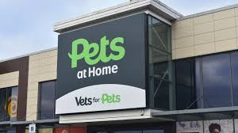

ScreenFreeSummers
ScreenFreeSummers
Pets at Home: Free “My Pet Pals” Workshop for Kids
Published July 2025
Calling all young animal lovers! Throughout the summer holidays, Pets at Home is hosting their free My Pet Pals workshops in over 450 stores across the UK, completely free of charge! These fun and educational 45‑minute sessions are designed to teach kids about animal care in a hands‑on, interactive way.
Workshop Details
- Duration: Up to 45 minutes per session
- Every day at 2pm during summer school holidays: • Scotland & Northern Ireland: 5 July – 17 August • England & Wales: 19 July – 31 August :contentReference[oaicite:5]{index=5}
- Suitable for ages 4+
Hosted by friendly Pet Care Advisors in-store, these sessions allow children to meet small animals, complete an activity pocketbook, and collect weekly themed stickers. At the end, each child earns a My Pet Pals certificate and works toward a special badge.
Why Families Love It
This workshop blends learning with fun: kids discover the five key welfare needs of pets, learn to be responsible pet owners, and enjoy the excitement of meeting real animals in a safe setting. There’s no pressure to buy anything just a chance to learn and play.
Here’s What You Get
- Friendly advice from trained Pet Care Advisors
- Hands-on activities and mini-games inside their pocketbook
- Free certificate, sticker, and opportunity to earn a badge
- Time to meet store animals and enjoy interactive tasks
Spaces can fill up fastbook your spot online by entering your postcode on the Pets at Home events page to find your nearest store.
Fun, free, and educational the My Pet Pals workshop is a pawsome experience for kids this summer!